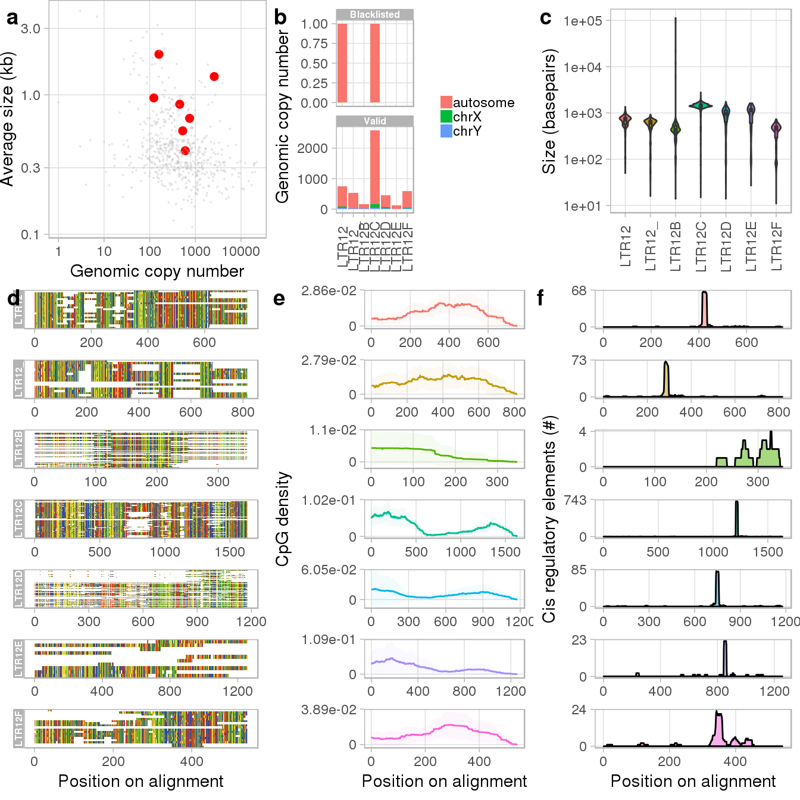
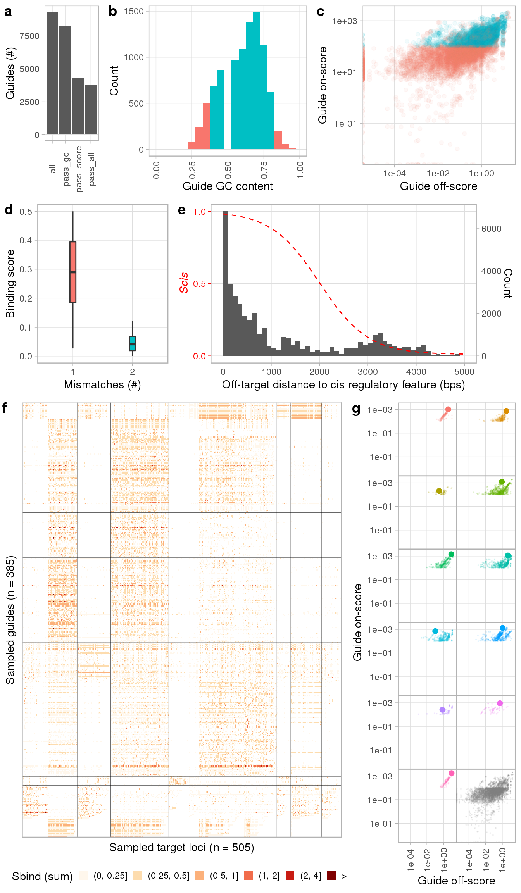
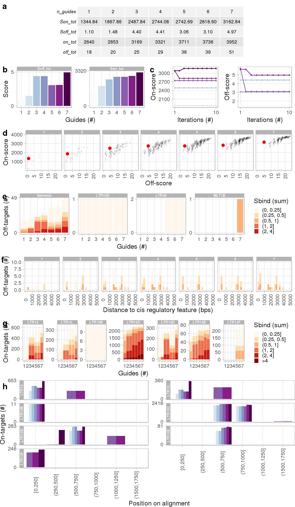

Repguide.RmdIn this tutorial, we are going to design guideRNAs against long terminal repeats (LTRs) originating from the human endogenous retrovirus 9. By following this workflow, you will understand the basic steps of the Repguide package and learn how to adapt them to your custom requirements.
Repguide requires the genome assembly of your organism of choice stored as a BSgenome object. You can retrieve the full list of supported genomes by typing BSgenome::available.genomes() or create a custom BSgenome object following the instructions.
Since we are designing guideRNAs against LTRs of the human genome, we will first install the UCSC hg38 assembly.
Important note: Do not use repeat-masked BSgenome objects (contain ‘masked’ suffix, e.g. BSgenome.Hsapiens.UCSC.hg38.masked)!
In addition to the assembled genome sequence, Repguide imports genomic coordinates of transposable elements (mandatory) and cis regulatory features (optional). A convient solution is to download transposon coordinates using the UCSC table browser by selecting your genome of choice, group = Repeats, track = RepeatMasker, and output format = all fields from selected table. You can provide custom annotation as long as it provides the basic information about chromosome, start, end, strand, repname (family identifier), and te_id (unique locus identifier). In this tutorial, we will show you how to import such information using the provided example datasets.
Repguide uses a R implementation of the short read aligner Bowtie to map potential guideRNAs against the genome. Bowtie requires a FM index based on the Burrows-Wheeler transform to do so. In case Repguide does not find the corresponding bowtie index files to your chosen genome, it will automatically create them. Since this takes about an hour (depends on workstation and genome), you can also download the appropriate index files (if available), rename them following the format (BSgenome + suffix, see below) and provide the directory in the refdir argument of the createGuideSet() function.
Example naming of the human hg38 bowtie indeces:
We start the workflow by loading Repguide and the human hg38 BSgenome object into our R environment:
We then create a guideSet object, which is a S4 class to store genomic information and results of later functions. To create such object, we have to define the genome assembly and provide annotation about transposable elements and cis regulatory features (e.g. promoters/enhancers). While the latter is optional, we highly recommend it for optimal guideRNA design. In this tutorial, we will use the hg38 UCSC repeatmasker output and FANTOM5 TSS annotation. We additionally blacklist promoter regions of essential human genes (see ?essential_genes for further information). Those three datasets are included in the Repguide package. We can also specify the path to the corresponding bowtie index directory using the refdir parameter. If refdir = NULL (the default), Repguide will search for bowtie indeces in the package installation directory and create the indeces there if not found.
# Path to FANTOM5 hg38 TSS bed file (provided)
tss_path <- system.file(package = 'Repguide',
'extdata',
'hg38_fair+new_CAGE_peaks_phase1and2.bed.gz')
# Path to RepeatMasker hg38 repeat annotation (provided, LTRs only)
repeats_path <- system.file(package = 'Repguide',
'extdata',
'hg38_ucsc_rmsk_ltr.txt.gz')
# Path to essential genes (provided)
essentials_path <- system.file(package = 'Repguide',
'extdata',
'hg38_essential_gene_tss_coords.bed')
gs <- createGuideSet(genome = Hsapiens, # Hsapiens is the short version of BSgenome.Hsapiens.UCSC.hg38
tes = repeats_path, # TE annotation
cis = tss_path, # TSS and/or enhancer annotation
temp = tempdir(), # Directory for temporary files
blacklist = essentials_path) # Regions to blacklist
#> Created new guideSet at Wed Jul 31 13:29:40 2019
gs
#> guideSet object of BSgenome.Hsapiens.UCSC.hg38
#> with 13944 blacklisted regions
#> with 687600 loci from 578 families
#> with 0 targets
#> with 0 valid guides
#> with 0 combinations
#> with 0 QC plots
#> registered 67 cores
#> matching bowtie index found: FALSEThe generated guideSet contains all annotation required to design guideRNAs against LTRs of the human genome. To add target sites, we can either provide names of repeat families we wish to target or a GRanges object with coordinates of the loci (Important note: Such a GRanges object requires repname and te_id metadata columns compatible with the guideSet’s TE annotation, see examples of ?addTargets() function).
We can retrieve the full list of available repeat families using the repnames() accessor function or search for specific families that match a specific pattern. For example, LTRs originating from the human endogenous retrovirus 9 all conveniently share a common ‘LTR12’ prefix (The Dfam database allows open access to transposon genetic relationships), allowing us to easily retrieve all its members by using regular expression:
families <- repnames(gs, pattern = 'LTR12')
families
#> [1] "LTR12F" "LTR12C" "LTR12E" "LTR12" "LTR12D" "LTR12B" "LTR12_"We now add these families as targets to our previously generated guideSet:
gs <- addTargets(gs,
targets = families) # Either character vector of repname identifier or GRanges objectTo inspect targeted families more closely or to design guideRNAs against specific parts of the families’ consensus model, we can compute or import multiple sequence alignments. Repguide computes a rough multiple sequence alignment by weighted sampling (~2% from a families’ total genomic sequences). While this approach is fast and usually sufficient to generate a representative consensus model, it might fail for highly polymorphic families. Therefore, Repguide also supports reading pre-computed multiple sequence alignments stored in fasta format. To import several such alignments, we first need to create a data.frame containing the family identifier of the alignment and the corresponding file’s location:
# Path to data directory containg multiple sequence alignment files
data_dir <- system.file(package = 'Repguide', 'extdata')
# Return paths to files ending with *.fasta.gz in that data directory
msa_files <- dir(data_dir, full = TRUE, pattern = 'fasta.gz$')
# Create data.frame with repname and corresponding file path
msa_df <- data.frame('repname' = c('LTR12B', 'LTR12D'), 'path' = msa_files)
msa_df
#> repname path
#> 1 LTR12B /home/davidbr/R/x86_64-pc-linux-gnu-library/3.5/Repguide/extdata/LTR12B_mafft_aligned.fasta.gz
#> 2 LTR12D /home/davidbr/R/x86_64-pc-linux-gnu-library/3.5/Repguide/extdata/LTR12D_mafft_aligned.fasta.gz
gs <- addAlignments(gs, # our guideSet
files = msa_df, # our data.frame
max_gap_freq = 0.8) # Removes columns with more than 80% gaps in the alignment
#> Computing alignments for LTR12, LTR12_, LTR12C, LTR12E, LTR12F
#> Aligning 19 sequences
#> Aligning 18 sequences
#> Aligning 57 sequences
#> Aligning 10 sequences
#> Aligning 18 sequences
#> Importing alignments for LTR12B, LTR12DHaving added the targets and alignments to our guideSet, we can now generate several QC reports and inspect the targeted families more closely:

The output generates general statistics on selected families and optional information that requires a multiple sequence alignment (see ?plotTargets for full annotation of the panels). As we can see from the figures, members of the LTR12C family are by far most prevalent and largest in size (panels a to c). Since we also calculated and added alignments, the output further visualizes the multiple sequence alignment (d), the density of CpG dinucleotides across it (e) and includes information on putative consensus transcription start sites (TSSs) (f). We can use this information for example, to optimize the design of our guideRNAs by targeting CpG dense regions close to the putative TSS.
After we are satisfied with the loci/families we wish to target, we continue to compute all possible guideRNAs fulfilling any user-defined criteria (e.g. GC content, target/off-target score, or binding position on consensus models). In this tutorial, we will restrict ourselves to the design of 19 bp guideRNAs with a 3’ NGG PAM. We further tell Repguide to score guides based on their binding to CpG dense parts of the LTR12B and LTR12E families.
For that purpose, we have to first create a simple data.frame providing coordinates on the consensus we wish to target. The plotTargets() report can assist you in deciding what start and end coordinates to supply.
consensus_df <- data.frame('repname' = c('LTR12B', 'LTR12E'),
'start' = c(1, 1),
'end' = c(200, 750))
consensus_df
#> repname start end
#> 1 LTR12B 1 200
#> 2 LTR12E 1 750Note that guide target binding sites outside the consensus range will be scored neutrally.
We then call the addGuides() function to compute our guide universe. More specifically, this function first calls jellyfish to calculate the 19mer (in our scenario) universe of specified targets, selects kmers with proper PAM sequence, and finds and annotates their putative genomic binding sites. Since most kmers are genetically similar and hence show redundanct binding profiles, Repguide finally clusters kmers into groups with homogenous binding profiles and marks the best kmer per cluster (the number of groups and selection procedure can be specified with the n_clust and alpha arguments of the addGuides() function). Depending on the target sequence complexity, guideRNA length, and allowed mismatches, the computation may take a bit.
gs <- addGuides(gs, # our guideSet
n_mismatches = 2, # max allowed mismatch of reported binding sites
min_Son = 100, # minimal score requirement for valid guides
guide_length = 19, # length of the guideRNAs to design
consensus_range = consensus_df, # restrict guideRNA design to parts on consensus
gc_content = c(0.4, 0.8)) # allowed guide GC content (between 40 and 80 percent)
#> [1] "Computing kmer universe"
#> [1] "Select kmers with proper PAM"
#> [1] "Creating bowtie index, this may take a while"
#> writing chr1 sequence to file ... OK
#> writing chr2 sequence to file ... OK
#> writing chr3 sequence to file ... OK
#> writing chr4 sequence to file ... OK
#> writing chr5 sequence to file ... OK
#> writing chr6 sequence to file ... OK
#> writing chr7 sequence to file ... OK
#> writing chr8 sequence to file ... OK
#> writing chr9 sequence to file ... OK
#> writing chr10 sequence to file ... OK
#> writing chr11 sequence to file ... OK
#> writing chr12 sequence to file ... OK
#> writing chr13 sequence to file ... OK
#> writing chr14 sequence to file ... OK
#> writing chr15 sequence to file ... OK
#> writing chr16 sequence to file ... OK
#> writing chr17 sequence to file ... OK
#> writing chr18 sequence to file ... OK
#> writing chr19 sequence to file ... OK
#> writing chr20 sequence to file ... OK
#> writing chr21 sequence to file ... OK
#> writing chr22 sequence to file ... OK
#> writing chrX sequence to file ... OK
#> writing chrY sequence to file ... OK
#> writing chrM sequence to file ... OK
#> [1] "Aligning kmers against: BSgenome.Hsapiens.UCSC.hg38"
#> [1] "Annotating guides"
#> [1] "Adding position on consensus"
#> [1] "Computing guide scores"
#> [1] "Blacklisting kmers"
#> Computing score blacklisting threshold
#> Set max_Soff to 15.77
#> Clustering kmers
#> [1] "Clustering 3752 kmers into 11 groups"
#> [1] "Clustering 5101 loci into 11 groups"We can now generate a QC report and sanity check the results by entering:

We can see from the report that while most of the potential guides have the desired GC content, about half of them do not pass our minimal score requirements (a - c). Panel d shows the Sbind score distribution by the total number of mismatches of a guide’s genomic complement and e summarizes the frequency of off-targets by their basepair distance to the nearest cis regulatory element. The dotted red line indicates the conversion of basepair distances to the corresponding cis score (Scis) of an off-target site. Panels f and g show the clustering of guideRNAs by their target binding profile and selection of the best guide per cluster, respectively. For full annotation of the panels, we refer to the documentation page of the plotGuides() function.
To adjust the guide selection or clustering steps, you can use the selGuides() or clustGuides() functions, respectively, without re-running the entire addGuides() pipeline.
Multiplexing of several distinct guideRNAs for combined delivery may maximize recruitment of dCAS9 to polymorphic multi-copy families, as recently shown for human LTR5HS elements [1]. However, selecting the optimal set of guideRNAs for maximal on- and minimal off-targeting is not trivial. Repguide first computes the binding profiles of all possible combinations of previously selected guide representatives, i.e. the best guides per cluster. The best combination then serves as seed to initialize a greedy algorithm (can be disabled by setting greedy = FALSE) to further optimize the set. The alpha parameter controls the weight of off-targets, i.e. alpha = 0 maximizes target coverage regardless of off-binding score while a larger alpha penalizes unspecific sets of guideRNAs (see guideRNA scoring for further information).
We calculate binding profiles of all possible combinations for up to 7 distinct guides by typing:
gs <- addCombinations(gs, # our guideSet
iterations = 10, # number of greedy search iterations
greedy = TRUE, # run greedy algorithm
alpha = 100, # off-target score penalty coefficient
max_guides = 7) # maximal number of guides to consider
#> Running greedy optimization on 8826 x 3752 dimensional matrixHaving added the score statistics for computed combinations to our guideSet, we can inspect the results by entering:

The table in panel a summarizes the on- and off-targets per guide combination. We can see that the on-target binding score plateaus with increasing number of distinct guides (a and b), meaning the addition of further guideRNAs to the delivery construct would provide little extra benefit. Panel c visualizes the performance of the greedy algorithm and panel d shows on- vs off-target scores for all computed guide combinations. Closer inspection of predicted off-targets is shown in panels e and f which summarize off-target binding coverage by genomic feature and distance to nearest cis regulatory element, respectively. The target loci coverage per number of guides is shown in panel (g). Note how several loci are covered by more than one binding site. Panel h shows the predicted binding position along the consensus sequences (in 250 bp bins) by the number of guides. Full annotation of the figure is available in the documentation of the plotCombinations() function.
We can finally save the relevant results and plots of our guideSet to a specified directory:
export(gs,
outdir = tempdir(),
dpi = 320, # image resolution,
full = TRUE, # exports stats for all guides, not only selected ones
workspace = FALSE) # don't save guideSet as workspaceThis command will create a subdirectory in the specified outdir (or current working directory if force = TRUE) and export the results.
[1] Daniel R Fuentes, Tomek Swigut, Joanna Wysocka. Systematic perturbation of retroviral LTRs reveals widespread long-range effects on human gene regulation. eLife (2018).
sessionInfo()
#> R version 3.5.3 (2019-03-11)
#> Platform: x86_64-pc-linux-gnu (64-bit)
#> Running under: CentOS Linux 7 (Core)
#>
#> Matrix products: default
#> BLAS/LAPACK: /net/mraid14/export/data/users/eladch/tools/CO7/mkl/2018.3/compilers_and_libraries_2018.3.222/linux/mkl/lib/intel64_lin/libmkl_gf_lp64.so
#>
#> locale:
#> [1] LC_CTYPE=en_US.UTF-8 LC_NUMERIC=C LC_TIME=en_US.UTF-8 LC_COLLATE=en_US.UTF-8 LC_MONETARY=en_US.UTF-8 LC_MESSAGES=en_US.UTF-8 LC_PAPER=en_US.UTF-8
#> [8] LC_NAME=C LC_ADDRESS=C LC_TELEPHONE=C LC_MEASUREMENT=en_US.UTF-8 LC_IDENTIFICATION=C
#>
#> attached base packages:
#> [1] stats4 parallel stats graphics grDevices utils datasets methods base
#>
#> other attached packages:
#> [1] BSgenome.Hsapiens.UCSC.hg38_1.4.1 BSgenome_1.50.0 rtracklayer_1.42.2 Biostrings_2.50.2 XVector_0.22.0
#> [6] GenomicRanges_1.34.0 GenomeInfoDb_1.18.2 IRanges_2.16.0 S4Vectors_0.20.1 BiocGenerics_0.28.0
#> [11] Repguide_0.0.1.2
#>
#> loaded via a namespace (and not attached):
#> [1] nlme_3.1-137 bitops_1.0-6 matrixStats_0.54.0 fs_1.2.7 doMC_1.3.5 bit64_0.9-7 rprojroot_1.3-2
#> [8] tools_3.5.3 backports_1.1.4 R6_2.4.0 DBI_1.0.0 lazyeval_0.2.2 colorspace_1.4-1 gridExtra_2.3
#> [15] tidyselect_0.2.5 bit_1.1-14 compiler_3.5.3 Biobase_2.42.0 xml2_1.2.0 desc_1.2.0 DelayedArray_0.8.0
#> [22] labeling_0.3 slam_0.1-45 phylogram_2.1.0 scales_1.0.0 pkgdown_1.3.0 commonmark_1.7 stringr_1.4.0
#> [29] digest_0.6.19 Rsamtools_1.34.1 rmarkdown_1.12 R.utils_2.8.0 pkgconfig_2.0.2 htmltools_0.3.6 rlang_0.3.2
#> [36] RSQLite_2.1.1 BiocParallel_1.16.6 dplyr_0.8.0.1 R.oo_1.22.0 RCurl_1.95-4.12 magrittr_1.5 GenomeInfoDbData_1.2.0
#> [43] Matrix_1.2-16 Rcpp_1.0.1 munsell_0.5.0 DECIPHER_2.10.2 ape_5.3 Rbowtie_1.22.0 R.methodsS3_1.7.1
#> [50] stringi_1.4.3 yaml_2.2.0 MASS_7.3-51.1 SummarizedExperiment_1.12.0 zlibbioc_1.28.0 plyr_1.8.4 grid_3.5.3
#> [57] blob_1.1.1 forcats_0.4.0 crayon_1.3.4 lattice_0.20-38 cowplot_0.9.4 knitr_1.22 pillar_1.3.1
#> [64] codetools_0.2-16 XML_3.98-1.19 glue_1.3.1 evaluate_0.13 data.table_1.12.2 kmer_1.1.1 foreach_1.4.4
#> [71] gtable_0.3.0 purrr_0.3.2 tidyr_0.8.3 clue_0.3-57 assertthat_0.2.1 ggplot2_3.1.0 xfun_0.5
#> [78] skmeans_0.2-11 roxygen2_6.1.1 tibble_2.1.1 iterators_1.0.10 GenomicAlignments_1.18.1 memoise_1.1.0 cluster_2.0.7-1